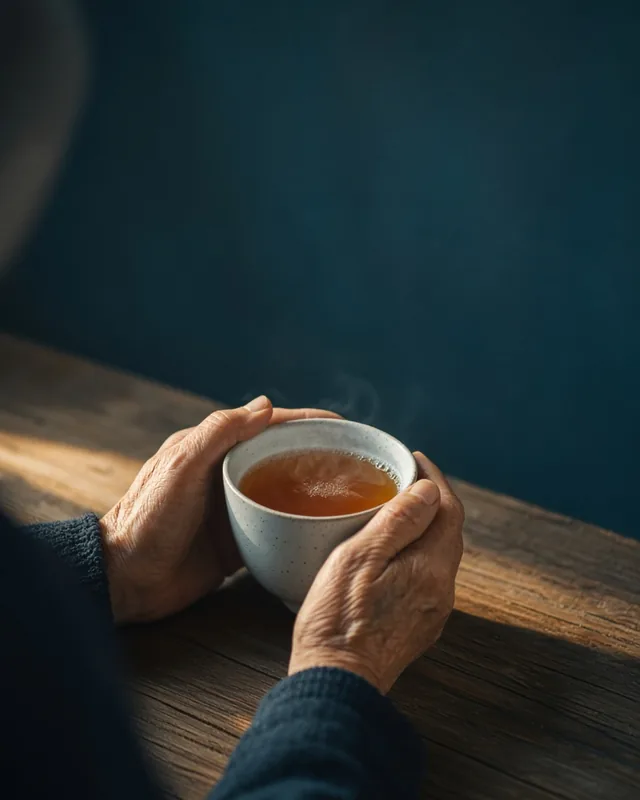
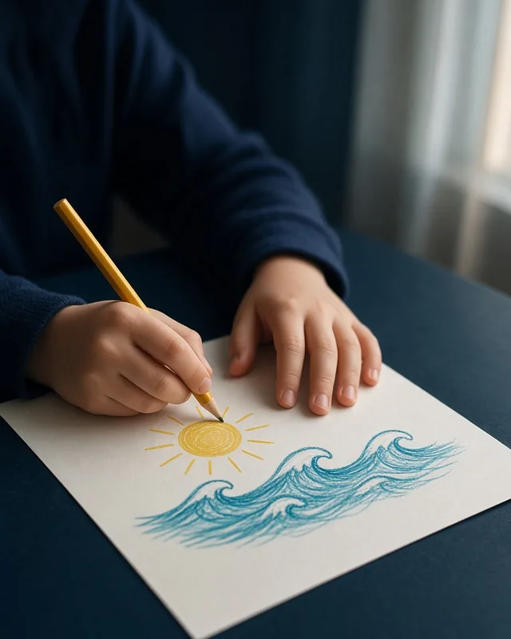
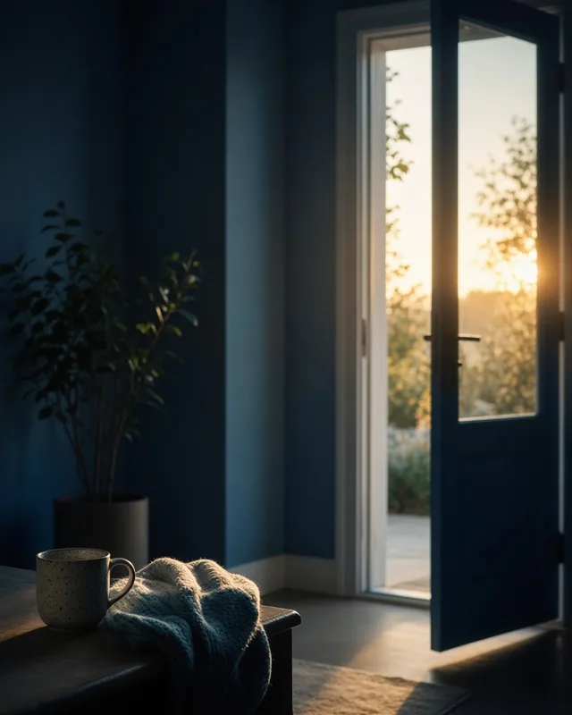
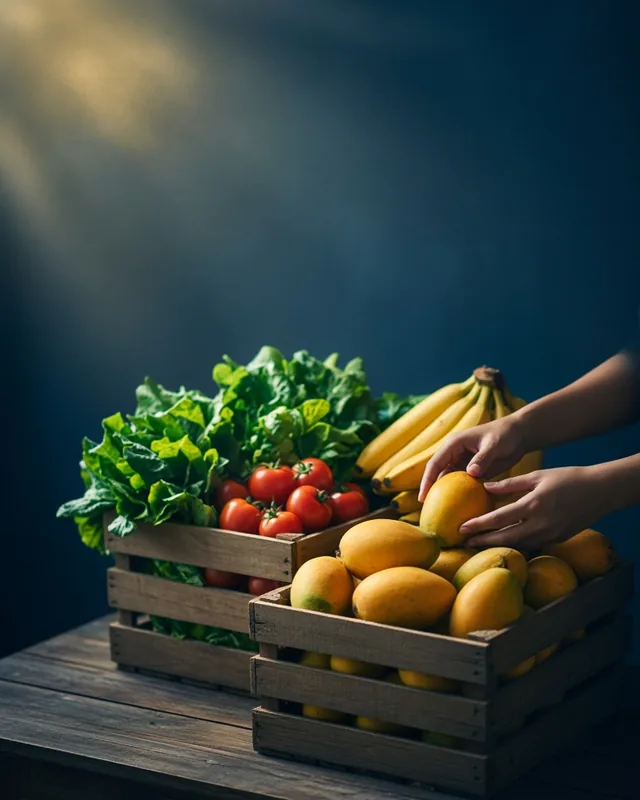
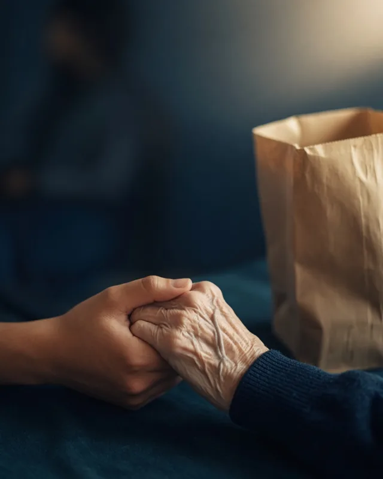
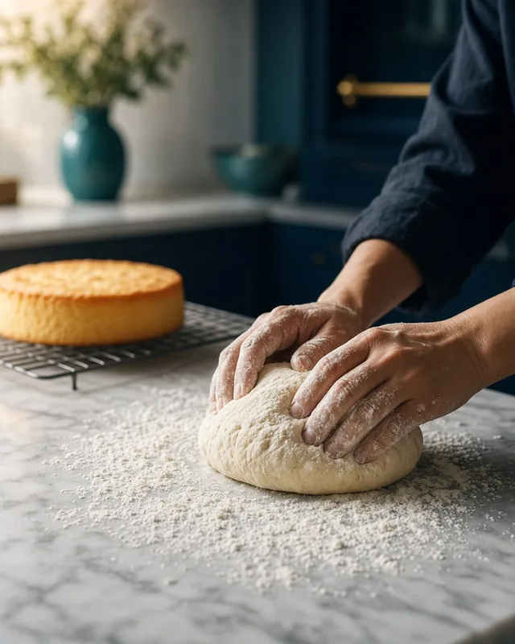

Accompagnement spirituel et humain
Accompagnement spirituel des hommes adultes
1 action
Ésaïe 55:1
Association chrétienne internationale basée à Ottawa et active au Gabon, nous soutenons les femmes, les jeunes et les familles en situation de vulnérabilité.
Chaque jour, nous œuvrons pour apporter soutien, espérance et dignité aux jeunes, aux femmes, aux veuves et aux familles en détresse.
Nous croyons que l’amour de Dieu s’exprime à travers des actions concrètes, empreintes de compassion, de respect et de solidarité.
Notre engagement : répondre à leurs besoins essentiels tout en favorisant leur autonomie et leur dignité.


Images d’illustration
Apporter un soutien concret, humain et spirituel aux personnes en situation de vulnérabilité, en particulier les femmes, les jeunes et les familles.
Des solutions durables : l’accompagnement, l’éducation, le soutien matériel, l’écoute et l’orientation.
6 axes d’action réunissent 15 actions concrètes.
Accompagnement spirituel des hommes adultes
1 action

Hébergement et accompagnement des femmes en difficulté, parrainage des jeunes mères monoparentales
2 actions
Prévention du décrochage, réussite scolaire, aide aux devoirs
3 actions

Épicerie et friperie solidaires, lutte contre le gaspillage, plantations solidaires
4 actions

Soutien aux familles à faibles revenus, aide aux courses et aux démarches, parcours de soins
3 actions
Le numérique pour tous, la parentalité à l’ère des écrans
2 actions
Nous aspirons à voir des communautés où chaque personne peut retrouver sa dignité, développer son potentiel et construire un avenir porteur d’espérance.
Voir les 15 actionsLe Gabon est notre premier terrain d’action, en lien direct avec nos origines.
C’est là que nous sommes nés, que nous avons grandi, étudié et travaillé avant de nous installer à l’étranger. C’est aussi au Gabon, au sein de l’Église gabonaise, que nous avons vécu notre naissance spirituelle.
Depuis notre siège d’Ottawa, nous travaillons avec des partenaires chrétiens locaux pour améliorer les conditions de vie des personnes et des communautés défavorisées.
Quatre situations qui demandent une intervention immédiate. Votre don peut être affecté à l’une d’elles.
Récits et prénoms publiés avec l’accord écrit des personnes : à confirmer par l’association

Image d’illustrationLudivine, une femme aveugle courageuse, confectionne des gâteaux pour subvenir aux besoins de sa famille. Son espace de cuisine a été fermé par l’agence de sécurité alimentaire en raison de l’insalubrité. Nous voulons lui offrir un nouvel espace de travail conforme, sécuritaire et adapté à son handicap, afin qu’elle puisse continuer à vivre de son talent.
Charles a longtemps lutté contre la consommation de stupéfiants. Il a récemment décidé de suivre Jésus comme Sauveur et Seigneur personnel, un tournant majeur dans sa vie. Nous voulons l’aider à persévérer en finançant un centre de désintoxication chrétien, ainsi qu’un accompagnement spirituel et humain.
Prudence a été abandonnée par son conjoint, qui a laissé derrière lui cinq enfants. Dans cette épreuve, elle a choisi de suivre Jésus comme Sauveur et Seigneur personnel. Elle vend des accessoires en ligne pour survivre, mais sa situation reste fragile. Nous voulons lui assurer un logement stable, afin qu’elle puisse reconstruire sa vie avec ses enfants.
Laure est mère de trois enfants et vit avec un diabète de type 2. Seule, elle doit gérer à la fois sa maladie et les besoins de sa famille. Nous l’accompagnons dans sa prise en charge médicale, mais sa situation reste précaire. Nous voulons lui assurer un hébergement stable, afin qu’elle puisse prendre soin d’elle-même et de ses enfants dans un environnement sécuritaire.
Votre soutien permet de transformer des vies. Chaque geste compte et porte du fruit.
Aucun événement n’est publié pour l’instant. Agenda à compléter
Petits enfants, n’aimons pas en paroles et avec la langue, mais en actions et avec vérité.
1 Jean 3:18
Nous servons chaque personne avec compassion, respect et intégrité, en reconnaissant la dignité que Dieu accorde à chacun.
Nous agissons avec transparence et responsabilité, afin que chaque action contribue réellement à améliorer la vie des plus vulnérables.
Nous accompagnons durablement les femmes, les jeunes et les familles, en favorisant l’éducation, l’autonomie et l’espérance.
Des hommes et des femmes engagés, animés par la foi et le désir de servir.
Présidente du conseil d’administration
Leader stratégique, garante de la gouvernance et représentante légale de l’association. Avec le conseil, elle assure la pérennité et l’impact de l’organisme.
Photo à fournir
Vice-président du conseil d’administration
Il appuie la présidente dans ses fonctions et assure la continuité de la gouvernance en cas d’absence ou d’empêchement.
Administrateur directeur général
Moteur opérationnel de l’association, il transforme la vision du conseil en actions concrètes et veille à sa viabilité comme à son impact.
Directeur général adjoint
Description du rôle à compléter
Secrétaire générale
Garante de l’organisation et du suivi administratif, elle coordonne les réunions, gère la correspondance et assure la communication entre membres et partenaires.
Trésorière
Responsable de la gestion financière, elle veille à la transparence des comptes, à la bonne allocation des ressources et rend compte au bureau et aux donateurs.
Une question, une demande d’accompagnement, une proposition de collaboration : écrivez-nous ou appelez-nous.
Horaires : du lundi au vendredi, de 9 h à 17 h, heure de l’Est
Ceci est une démonstration : aucun paiement n’a été effectué.